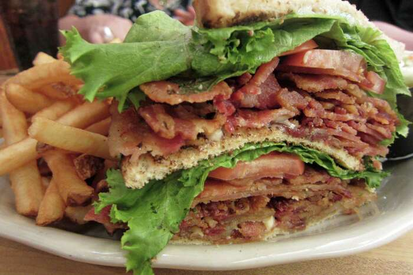

Cloudcroft Dining at a Glance
Cloudcroft’s dining scene is independent, seasonal, and small-scale. No chains. Burro Avenue is the walkable core with coffee shops, bakeries, a tea shop, a sandwich counter, bars, and galleries. James Canyon Highway has roadside spots — BBQ, country cooking, diners. The Lodge offers the only fine-dining option.
Hours shift by season and staffing. Many places close early or reduce days off-season. The dining here rewards flexibility and a willingness to call ahead.
Cloudcroft is a small village. Late-night dining options are very limited. Plan your meals around posted hours, and don’t assume anything is open past 8 or 9 PM outside of summer weekends.
Every Dining Option in Cloudcroft
Cloudcroft’s dining runs from a chef-driven fine-dining room to roadside BBQ, with coffee shops, bakeries, delis, bars, and specialty shops in between. Each spot has its own personality. Below are all the options — click through for full guides with menus, photos, and what to know before you visit.

Eighteen99
Fine DiningThe Lodge’s signature dining room. Chef-driven dinner menu, cocktails at St. Andrew’s Lounge, and mountain views. Reservations recommended. Wed–Sat evenings.
🌐 223collectionhotels.com

Cloudcroft Brewery
BreweryCraft beer at 8,600 feet. Local brewery on Burro Avenue with taproom service.

Mad Jack’s Mountaintop BBQ
BBQCentral Texas-style barbecue on James Canyon Highway. Brisket, ribs, and smoked meats from a dedicated BBQ operation.

Dusty Boots Café
Country CookingHomemade country cooking at Dusty Boots Motel on James Canyon Highway. Breakfast all morning, daily specials, and German Saturday dinners.

Black Bear Coffee Shop
Coffee & GalleryCoffee, espresso, and a rotating art gallery on Burro Avenue. A morning anchor for the downtown walking corridor.

Cloudcroft Sandwich Shop
DeliSandwiches, soups, and salads on Burro Avenue. A quick, casual lunch stop in the downtown cluster.

Western Bar & Cafe
Bar & GrillA classic Cloudcroft bar and café on Burro Avenue. American comfort food, drinks, and a locals-and-visitors crossover spot.

Brother-N-Law BBQ
BBQTexas-style BBQ on James Canyon Highway. Another strong BBQ option in the Cloudcroft corridor.

Big Daddy’s Diner
DinerCowboy-heritage home cooking on James Canyon Highway. American and Mexican fare in a casual roadside setting.

High Rollin’ Coffee
Coffee & CaféOrganic, from-scratch café on James Canyon Highway. Coffee, food, and a vegetarian-friendly menu.

Noisy Water Winery
WineryAward-winning New Mexico wines with a tasting room on Burro Avenue. Wine flights, bottles, and a Burro Ave browsing stop.

Dave’s Café
Bar & GrillA Cloudcroft institution since 1984. Burgers, breakfast, comfort food, and live music on Burro Avenue. Casual, familiar, and locally rooted.

Old Barrel Tea Company
Tea ShopLoose-leaf tea, raw honey, gourmet spices, and wellness products. A female-run, family-owned New Mexico business on Burro Avenue.

Eight the Cake
Bakery & ArtCustom cakes, pastries, coffee, and a gallery space on Burro Avenue. A combined bakery-and-art stop in the heart of downtown.

Ski Cloudcroft Food Service
PizzaWood-fired pizza at the ski area. Summer. A unique mountain-top dining experience when open.
Want the full details? Many restaurants above have dedicated guides with menus, photos, hours, and what to know before you visit. Look for the “Read full guide” links.
Best Picks by Category
Best Fine Dining
Eighteen99 — The only chef-driven, reservation-based dinner in Cloudcroft.
Best Breakfast
Dusty Boots Café — Homemade breakfast every morning with biscuits, gravy, and country plates.
Best Burro Ave Walk
Dave’s, Black Bear, Eight the Cake, Sandwich Shop, Old Barrel Tea — All clustered within a few walkable blocks.
Best BBQ
Mad Jack’s or Brother-N-Law — Two dedicated BBQ operations on James Canyon Highway.
Best Coffee
Black Bear Coffee Shop or High Rollin’ — Black Bear for downtown Burro Ave, High Rollin’ for the highway corridor.
Best Bakery
Eight the Cake — Custom cakes, pastries, and a gallery space on Burro Avenue.
Best for Families
Dave’s Café or Dusty Boots — Casual, familiar, and kid-friendly.
Best for Date Night
Eighteen99 — The clearest special-occasion restaurant in town.
Best Unique Experience
Old Barrel Tea for specialty tea, Noisy Water Winery for wine tasting — Two non-restaurant stops that add texture to a Cloudcroft visit.
What Diners Should Know
Seasonal Hours
Most restaurants adjust hours by season and staffing. Summer is peak. Off-season hours may shrink or days may be dropped. Always verify before visiting.
Call Ahead
Small-town staffing means hours can shift without notice. A quick phone call can save you a wasted trip, especially off-season or midweek.
Cash & Card
Most places accept cards, but some smaller operations may prefer or require cash. Carry some just in case.
No Chains
Every restaurant in Cloudcroft is independently owned. Set expectations accordingly — menus are smaller, hours are shorter, and service is personal.
Burro Ave Walking
The downtown corridor is walkable. Coffee, bakeries, tea, sandwiches, and bars are all within a few blocks of each other.
James Canyon Highway
BBQ joints, diners, and roadside spots require a short drive from downtown. Worth the trip for dedicated BBQ and country cooking.
Reservations
Eighteen99 at The Lodge is the one restaurant where reservations are recommended. Most other spots are walk-in.
Late-Night Options
Very limited. Plan your dinner early. Most kitchens close by 8 or 9 PM, and options narrow significantly after dark.
Altitude
Cloudcroft sits around 9,000 feet. Hydrate, take it easy on arrival, and don’t skip meals — altitude can affect appetite and energy.
Best Choices by Occasion
Romantic Dinner
Eighteen99 — The only fine-dining, reservation-based restaurant in Cloudcroft. Cocktails, mountain views, and a chef-driven menu.
Morning Coffee
Black Bear Coffee Shop — Espresso, coffee, and a gallery space on Burro Avenue. The natural starting point for a downtown morning.
Family Lunch
Dave’s Café — Burgers, comfort food, and a casual atmosphere that works for all ages.
Local Character
Dusty Boots Café — Homemade food, German Saturday dinners, and roadside motel nostalgia on James Canyon Highway.
Sweet Treat
Eight the Cake — Custom cakes, pastries, and coffee in a bakery-gallery on Burro Avenue.
Grab & Go
Cloudcroft Sandwich Shop — Quick sandwiches, soups, and salads for a fast lunch on Burro Avenue.
Something Different
Old Barrel Tea Company — Loose-leaf tea, honey, spices, and wellness products. Not a restaurant — a specialty shop worth browsing.
The Bottom Line
Cloudcroft’s dining scene is independent, seasonal, and personal. There are no chains, no late-night delivery apps, and no deep bench of backup options. That is the trade-off for eating in a mountain village at 9,000 feet.
The reward is character. A fine-dining room inside a historic lodge. Roadside BBQ on a mountain highway. A bakery-gallery on a walkable main street. A tea shop run by a New Mexico family. These are not interchangeable experiences — they are the texture of a Cloudcroft trip.
Travelers who embrace the small-town pace, call ahead, and plan around posted hours will eat well here. Travelers who expect big-city convenience may find the options limited. Cloudcroft rewards flexibility.
Ready to Eat in Cloudcroft?
From fine dining at The Lodge to roadside BBQ on James Canyon Highway — Cloudcroft’s independent restaurants reward travelers who like character over convenience.